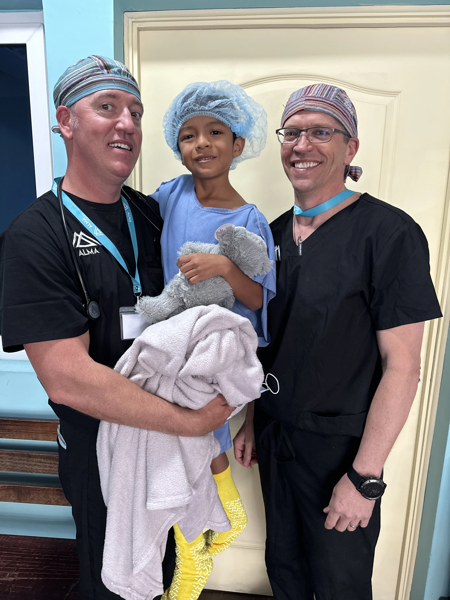

Cirujano
“Tuve el privilegio de atender a una niña de dos años y medio con deformidades en ambas manos y pies.”
Dr. Patrick MullenKootenai Health, primera misión con ALMA en 2021
La niña era Evelinda. El Dr. Mullen operó sus dedos unidos con su mamá, Juana López, a su lado. Después, la familia envió videos de su terapia de manos, y él espera volver para operar su otra mano.
Fuente: Revista Kootenai Health, 2022 (traducido)